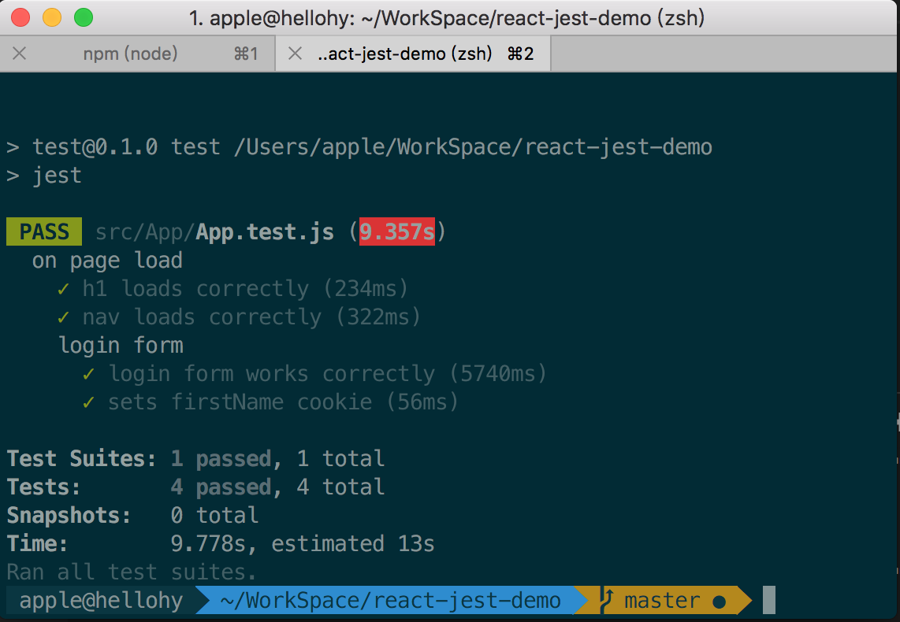
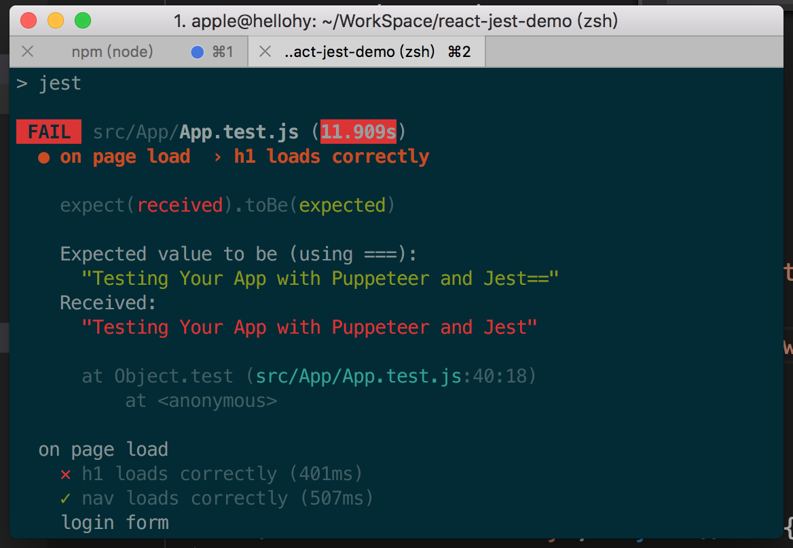
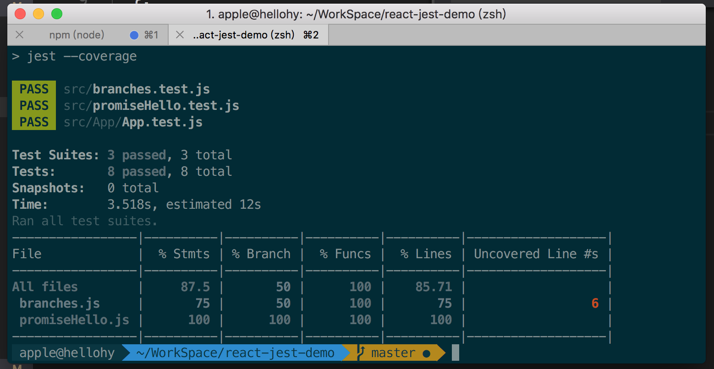
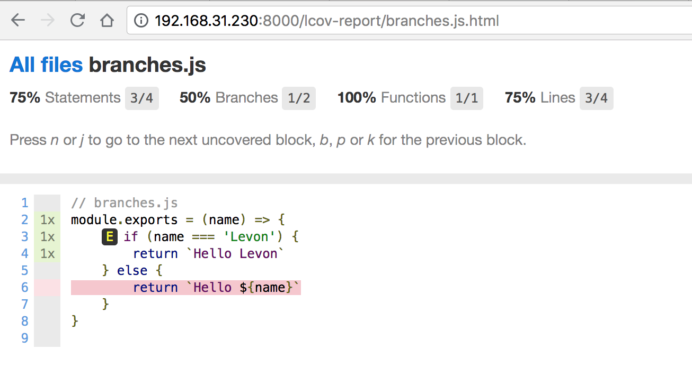

React Jest
文章目录
初探前端测试框架 Jest
前端测试工具一览
前端测试工具也和前端的框架一样纷繁复杂，其中常见的测试工具，大致可分为测试框架、断言库、测试覆盖率工具等几类。
测试框架
测试框架的作用是提供一些方便的语法来描述测试用例，以及对用例进行分组。测试框架可分为两种： TDD （测试驱动开发）和 BDD （行为驱动开发），我理解两者间的区别主要是一些语法上的不同，其中 BDD 提供了提供了可读性更好的用例语法，至于详细的区别可参见 The Difference Between TDD and BDD 一文。常见的测试框架有 Jasmine, Mocha 以及本文要介绍的 Jest 。
断言库
断言库主要提供语义化方法，用于对参与测试的值做各种各样的判断。这些语义化方法会返回测试的结果，要么成功、要么失败。常见的断言库有 Should.js, Chai.js 等。
测试覆盖率
用于统计测试用例对代码的测试情况，生成相应的报表，比如 istanbul 。
Jest
为什么选择 JestJest 是 Facebook 出品的一个测试框架，相对其他测试框架，其一大特点就是就是内置了常用的测试工具，比如自带断言、测试覆盖率工具，实现了开箱即用。 而作为一个面向前端的测试框架， Jest 可以利用其特有的快照测试功能，通过比对 UI 代码生成的快照文件，实现对 React 等常见框架的自动测试。 此外， Jest 的测试用例是并行执行的，而且只执行发生改变的文件所对应的测试，提升了测试速度。目前在 Github 上其 star 数已经破万；而除了 Facebook 外，业内其他公司也开始从其它测试框架转向 Jest ，比如 Airbnb 的尝试 ，相信未来 Jest 的发展趋势仍会比较迅猛。
安装
npm install --save-dev jest or yarn add --dev jest
package.json 里面加入如下配置：
{
"scripts": {
"test": "jest"
}
}
Jest 的测试脚本名形如.test.js，不论 Jest 是全局运行还是通过 npm test 运行，它都会执行当前目录下所有的.test.js 或 *.spec.js 文件、完成测试。
基本使用
用例的表示
表示测试用例是一个测试框架提供的最基本的 API ， Jest 内部使用了 Jasmine 2 来进行测试，故其用例语法与 Jasmine 相同。test()函数来描述一个测试用例，举个简单的例子：
test(
"h1 loads correctly",
async () => {
const html = await page.$eval(".App-title", e => e.innerHTML);
expect(html).toBe("Testing Your App with Puppeteer and Jest");
},
1600000
);
其中toBe('...')就是一句断言，jest里面称为matcher.
写完了用例，运行在项目目录下执行npm test，即可看到测试结果: 
若测试失败，会标识出失败的断言位置: 
用例的预处理和后处理
有时我们想在测试开始之前进行下环境的检查、或者在测试结束之后作一些清理操作，这就需要对用例进行预处理或后处理。对测试文件中所有的用例进行统一的预处理，可以使用 beforeAll() 函数；而如果想在每个用例开始前进行都预处理，则可使用 beforeEach() 函数。至于后处理，也有对应的 afterAll() 和 afterEach() 函数。 如果只是想对某几个用例进行同样的预处理或后处理，可以将先将这几个用例归为一组。使用 describe() 函数即可表示一组用例，再将上面提到的四个处理函数置于 describe() 的处理回调内，就实现了对一组用例的预处理或后处理：
const test = {
foo: true,
bar: false
}
describe('test testObject', () => {
beforeAll(() => {
// 预处理操作
})
test('is foo', () => {
expect(testObject.foo).toBeTruthy()
})
test('is not bar', () => {
expect(testObject.bar).toBeFalsy()
})
afterAll(() => {
// 后处理操作
})
})
测试异步代码
异步代码的测试，关键点在于告知测试框架测试何时完成，让其在恰当的时机进行断言。针对几种常见的异步代码形式， Jest 也提供了相应的异步测试语法。首先对于异步回调，向其传入并执行 done 函数， Jest 会等 done 回调执行结束后，结束测试
测试覆盖率
Jest 内置了测试覆盖率工具istanbul，要开启，可以直接在命令中添加 –coverage 参数，或者在 package.json 文件进行更详细的配置。 运行 istanbul 除了会再终端展示测试覆盖率情况，还会在项目下生产一个 coverage 目录，内附一个测试覆盖率的报告，让我们可以清晰看到分支的代码的测试情况。
// branches.js
module.exports = (name) => {
if (name === 'Levon') {
return `Hello Levon`
} else {
return `Hello ${name}`
}
}
// branches.test.js
let branches = require('./branches.js')
describe('Multiple branches test', ()=> {
test('should get Hello Levon', ()=> {
expect(branches('Levon')).toBe('Hello Levon')
});
// test('should get Hello World', ()=> {
// expect(branches('World')).toBe('Hello World')
// });
})
运行jest --coverage

打开coverage目录/coverage/lcov-report/index.html，可以查看详细信息： 
值得吗？
对于一些需求频繁变更、复用性较低的内容，比如活动页面，让开发专门抽出人力来写测试用例确实得不偿失。
好处
- 保障代码质量和功能的实现的完整度
- 提升开发效率，在开发过程中进行测试能让我们提前发现 bug ，此时进行问题定位和修复的速度自然比开发完再被叫去修 bug 要快许多
- 便于项目维护，后续任何代码更新也必须跑通测试用例，即使进行重构或开发人员发生变化也能保障预期功能的实现
适用于什么场景
- 需要长期维护的项目。它们需要测试来保障代码可维护性、功能的稳定性
- 较为稳定的项目、或项目中较为稳定的部分。给它们写测试用例，维护成本低
- 被多次复用的部分，比如一些通用组件和库函数。因为多处复用，更要保障质量
文章作者 hellohy
上次更新 2018-07-23